library(sf) # load the sf package for working with spatial data
library(tidyverse) # load the tidyverse as before7 Spatial data
From displaying simple point data to examining collision density along routes or between areas, the geographic property of STATS19 data is one of its most useful attributes. Mapping is a hugely useful and powerful aspect of R and has many applications in road safety, both in understanding geographic trends and presenting insight to colleagues. This aspect of R is covered in detail in the book Geocomputation With R. By mapping collision data in R, you can add layers containing other geographic datasets to further understand the reasons for certain trends. This can lead to new opportunities for intervention and collaboration with other parties who may have mutually compatible solutions for reaching their goals. We will use the following packages in this section:
7.1 sf objects
All road crashes happen somewhere and, in the UK at least, all collisions recorded by the police are given geographic coordinates. These can help in prioritising interventions to save lives by focusing on ‘crash hotspots.’ R has strong geographic data capabilities with the sf package, providing a generic class for spatial vector data. Points, lines and polygons are represented in sf as objects in a special ‘geometry column’, typically called ‘geom’ or ‘geometry’, extending the data frame class we’ve already seen in crashes, created in Section 5 (repeated here to consolidate data frame creation):
crashes = tibble(
casualty_type = c("pedestrian", "cyclist", "cat"),
casualty_age = seq(from = 20, to = 60, by = 20),
vehicle_type = c("car", "bus", "tank"),
dark = c(TRUE, FALSE, TRUE)
)Create an sf data frame called crashes_sf that expands the crashes data frame to include a geometry column based on the crashes longitude and latitude data as follows:
crashes_sf = crashes # create copy of crashes dataset
crashes_sf$longitude = c(-1.3, -1.2, -1.1)
crashes_sf$latitude = c(50.7, 50.7, 50.68)
crashes_sf = st_as_sf(crashes_sf, coords = c("longitude", "latitude"), crs = 4326) # st_as_sf converts longitude and latitude coordinates into spatial objects using a specified Coordinate Reference System (see 7.6)Exercises:
- Plot only the geometry column of
crashes_sf(Hint: the solution may contain$geometry). If the result is like that in Figure 7.1, congratulations, it worked! - Plot
crashes_sf, only showing the age variable. - Plot the 2nd and 3rd crashes, showing which happened in the dark.
- Bonus: How far apart are the points? (Hint:
sffunctions begin withst_) - Bonus: Near which settlement did the tank runover the cat?
plot(crashes_sf$geometry)
plot(crashes_sf["casualty_age"])
plot(crashes_sf[2:3, "dark"])crashes_sf dataset shown in map form with the function plot().
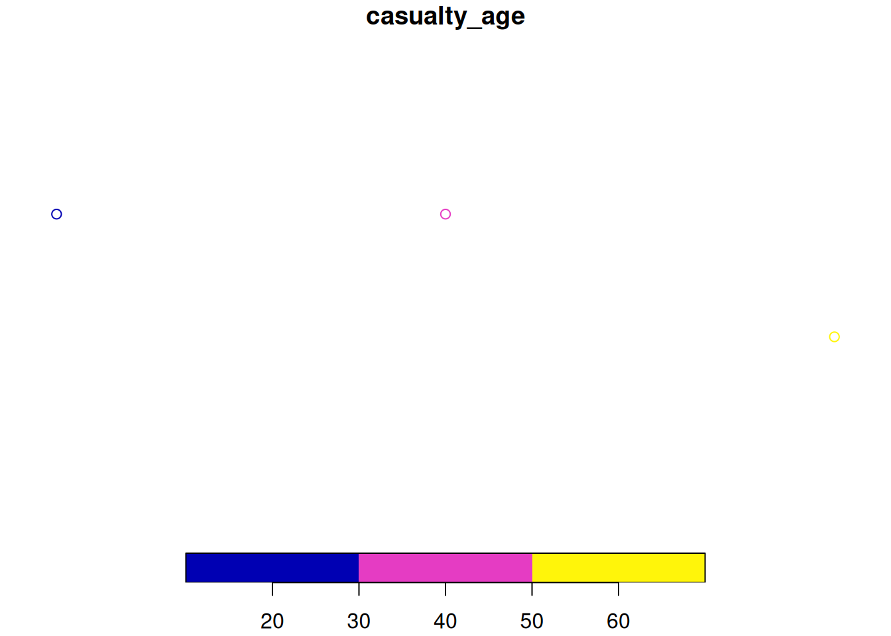
crashes_sf dataset shown in map form with the function plot().
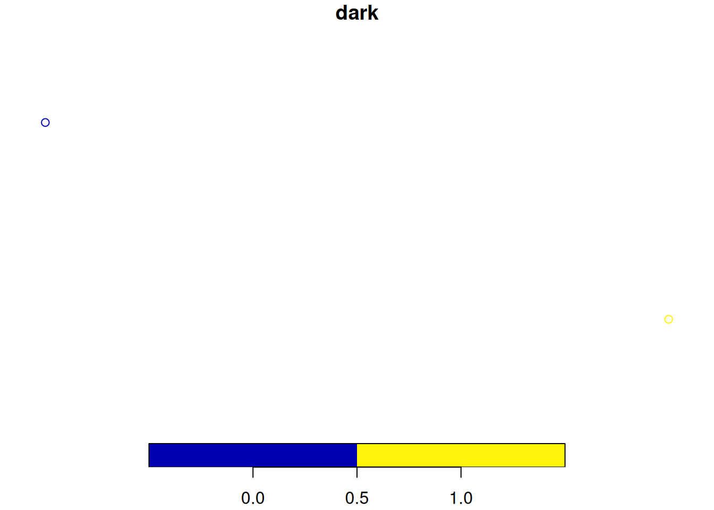
crashes_sf dataset shown in map form with the function plot().
7.2 Reading and writing spatial data
You can read and write spatial data with read_sf() and write_sf(), as shown below (see ?read_sf):
First, let’s create the zones object that we’ll use for demonstration:
zones = pct::get_pct_zones("isle-of-wight")[1:9]Now we can read and write spatial data:
write_sf(zones, "zones.geojson") # saves the spatial dataset called zones as geojson file type
write_sf(zones, "zmapinfo", driver = "MapInfo file") # saves the dataset as a MapInfo file
read_sf("zmapinfo") # reads-in mapinfo fileSee Chapter 6 of Geocomputation with R for further information.
7.3 sf polygons
sf objects can also represent administrative zones. This is illustrated below with reference to zones, a spatial object representing the Isle of Wight, that we created in the previous section. Exercises:
- What is the class of the
zonesobject? - What are its column names?
- Print its first 2 rows and columns 6:8 (the result is below).
Simple feature collection with 2 features and 5 fields
Geometry type: MULTIPOLYGON
Dimension: XY
Bounding box: xmin: -1.301131 ymin: 50.69052 xmax: -1.28837 ymax: 50.70547
Geodetic CRS: WGS 84
# A tibble: 2 × 6
geo_code all bicycle foot car_driver geometry
<chr> <dbl> <dbl> <dbl> <dbl> <MULTIPOLYGON [°]>
1 E01017326 698 23 285 286 (((-1.289993 50.69766, -1.290177 50.…
2 E01017327 720 25 225 374 (((-1.295712 50.69383, -1.29873 50.6…7.4 Spatial subsetting and sf plotting
Like index and value subsetting, spatial subsetting can be done with the [] notation. We can identify the crashes (crashes_sf) that occur in the Isle of Wight (zones) by subsetting as follows (i.e. subset zones by whether it contains data in crashes_sf):
zones_containing_crashes = zones[crashes_sf, ]To plot a new layer on top of an existing sf plot, use the add = TRUE argument, e.g. as follows:
plot(zones$geometry) # plot just the geometry of one layer
plot(zones_containing_crashes$geometry, col = "grey", add = TRUE)Remember to plot only the geometry column of objects to avoid multiple maps. Colours can be set with the col argument.
Exercises:
- Plot the geometry of the zones, with the zones containing crashes overlaid on top in red (see Figure 7.4).
- Plot the zone containing the 2nd crash in blue (see Figure 7.5).
- Bonus: Plot all zones that intersect with a zone containing crashes, with the actual crash points plotted in black (see Figure 7.6).
plot(zones$geometry)
plot(zones_containing_crashes$geometry, col = "red", add = TRUE)
plot(zones$geometry)
plot(zones[crashes_sf[2, ], ], col = "blue", add = TRUE)
plot(zones$geometry)
plot(zones[zones_containing_crashes, ], col = "yellow", add = TRUE)
plot(crashes_sf$geometry, pch = 20, add = TRUE)
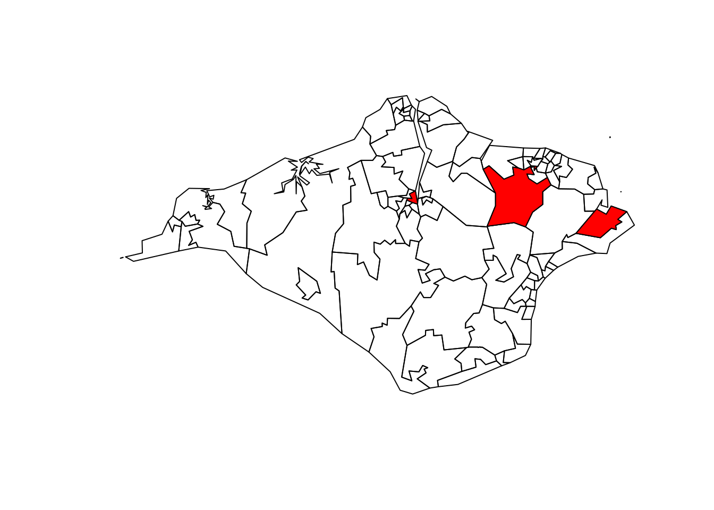
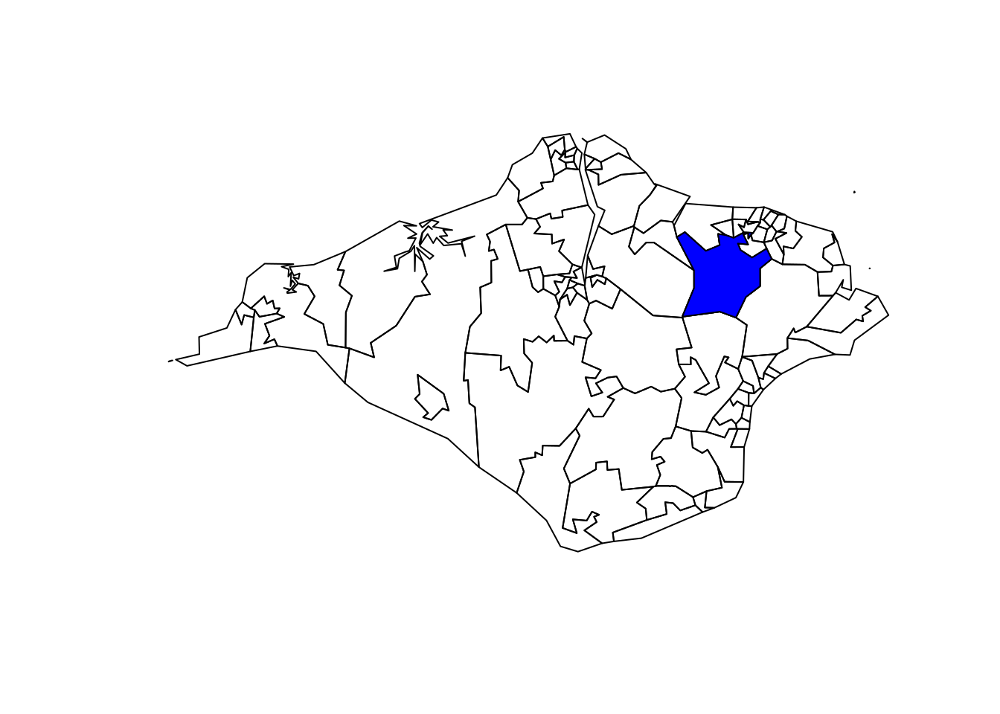
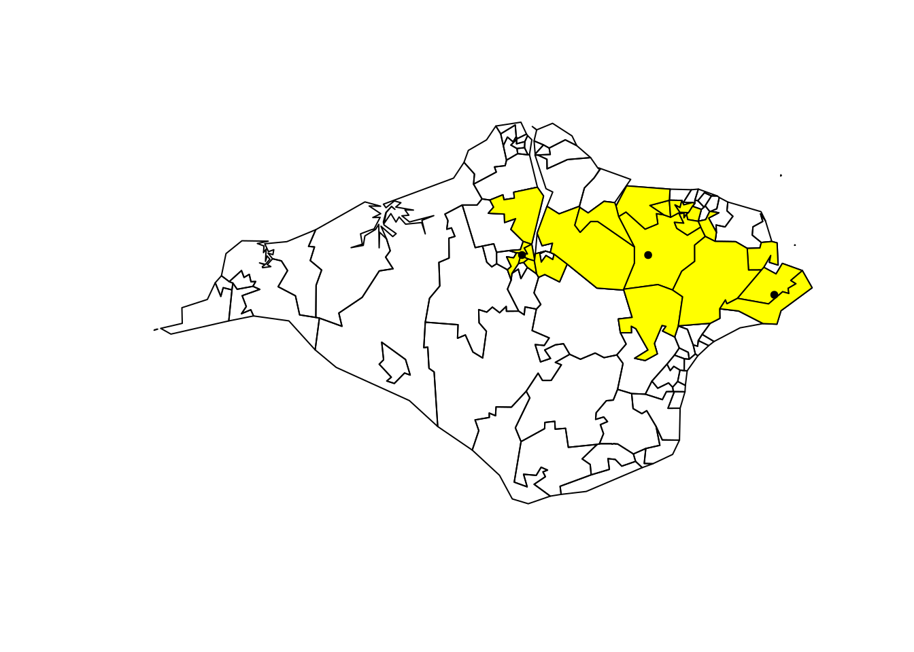
7.5 Geographic joins
Geographic joins involve assigning values from one object to a new column in another, based on the geographic relationship between them. With sf objects, the data from the crashes_sf dataset is joined onto the ‘target’ zones dataset, to create a new object called zones_joined:
zones_joined = st_join(zones[1], crashes_sf)The above code takes the geo_code column data from zones, matches it to the geometry column in crashes_sf and then joins it to the crashes that have occurred in those geo_codes. The matched, joined geo_code is a new column in the zone_joined dataset. We now know the administrative geo_code in which each crash occured.
Exercises:
- Plot the
casualty_agevariable of the newzones_joinedobject (see Figure 7.7, to verify the result). - How many zones are returned in the previous command?
- Select only the
geo_codecolumn from thezonesand thedarkcolumn fromcrashes_sfand use theleft = FALSEargument to return only zones in which crashes occurred. Plot the result. (Hint: it should look like the map shown in Figure 7.8)
See Chapter 4 of Geocomputation with R for further information on geographic joins.
plot(zones_joined["casualty_age"])
zjd = st_join(zones[1], crashes_sf["dark"], left = FALSE)
plot(zjd)
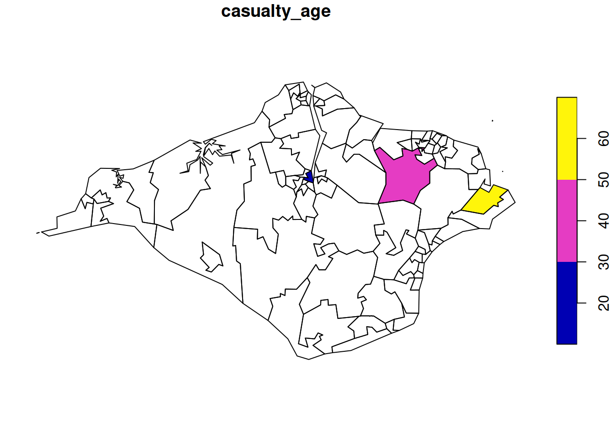
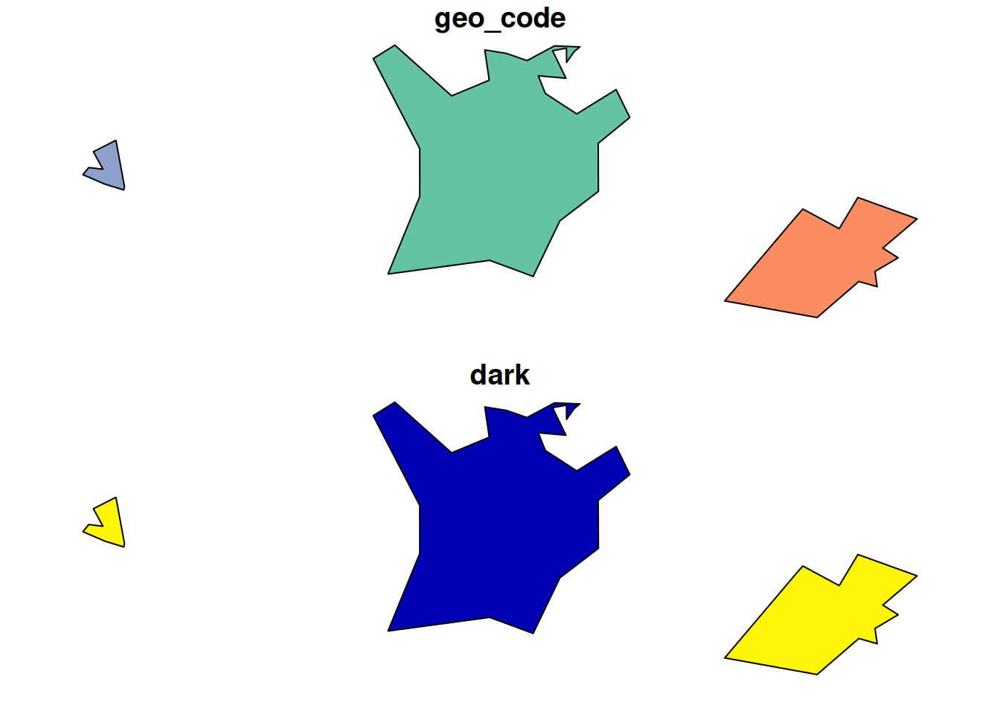
7.6 Coordinate Reference Systems
A Coordinate Reference Systems (CRS) is used for plotting data on maps. There are many systems in use but they can generally be classified into two groups; ‘projected’ and ‘geographic’. A projected system, such as Eastings/Northings, plots locations onto a flat 2D projection of the Earth’s surface. A geographic system, such as Longitude/Latitude, refers to locations on the 3D surface of the globe. Distance and direction calculations work differently between geographic and projected CRSs, so it is often necessary to convert from one to another. Fortunately, R makes this very easy, and every CRS has its own unique reference number. For example, 27700 for the British National Grid system.
CRSs define how two-dimensional points (such as longitude and latitude) are actually represented in the real world. A CRS value is needed to interpret and give true meaning to coordinates. You can get and set CRSs with the command st_crs(). Transform CRSs with the command st_transform(), as demonstrated in the code chunk below, which converts the ‘lon/lat’ geographic CRS of crashes_sf into the projected CRS of the British National Grid:
crashes_osgb = st_transform(crashes_sf, 27700)Exercises:
- Try to subset the zones with the
crashes_osgb. What does the error message say? - Create
zones_osgbby transforming thezonesobject. - Bonus: Use
st_crs()to find out the units measurement of the British National Grid.
For more information on CRSs see Chapter 6 of Geocompuation with R.
7.7 Buffers
Buffers are polygons surrounding geometries, usually with fixed distance. For example, in road safety research a 30m buffer can be created around crash locations to identify crashes that happened in close proximity to a particular junction or road segment.
Exercises:
- Find out and read the help page of
sf’s buffer function. - Create an object called
crashes_1km_bufferrepresenting the area within 1 km of thecrashes_osgbobject and plot the result using the command:plot(crashes_1km_buffer). As a fun bonus, try:mapview::mapview(crashes_1km_buffer). - Bonus: Try creating buffers on the geographic version of the
crashes_sfobject. What happens?
7.8 Attribute operations on sf objects
We can do non-spatial operations on sf objects because they are data.frames. Try the following attribute operations on the zones data:
# use the zones dataset we created earlier
sel = zones$all > 3000 # create a subsetting object
zones_large = zones[sel, ] # subset areas with a population over 3,000
zones_2 = zones[zones$geo_name == "Isle of Wight 002",] # subset based on 'equality' query
zones_first_and_third_column = zones[c(1, 3)]
zones_just_all = zones["all"]Exercises:
- Practice the subsetting techniques you have learned on the
sf data.frameobjectzones:- Create an object called
zones_small, which contains only regions with less than 3000 people in theallcolumn. - Create a selection object called
sel_high_carwhich isTRUEfor regions with above median numbers of people who travel by car andFALSEotherwise. - Create an object called
zones_footwhich contains only the foot attribute fromzones. - Bonus 1: plot
zones_footusing the functionplotto show where walking is a popular mode of travel to work. - Bonus 2: building on your answers to previous questions, use
filter()from thedplyrpackage to subset small regions where car use is high.
- Create an object called
- Bonus: What is the population density of each region (Hint: you may need to use the functions
st_area(),as.numeric()and use the ‘all’ column)? - Bonus: Which zone has the highest percentage of people who cycle?
7.9 Mapping road crash data
So far we have used the plot() function to make maps. That’s fine for basic visualisation, but for publication-quality maps we recommend using tmap. See Chapter 8 of Geocomputation with R for further explanation and alternatives. After installation, load the package as follows:
library(tmap)
tmap_mode("plot") # this sets the tmap mode to plotting as opposed to interactiveℹ tmap mode set to "plot".Exercises:
- Create the plots of the
zonesobject usingplot()andtm_shape() + tm_polygons()functions (see Figure 7.9). - Create an interactive version of the
tmapplot by settingtmap_mode("view")and re-running the plotting commands. - Add an additional layer to the interactive map showing the location of crashes, using marker and dot symbols.
- Bonus: Change the default basemap (Hint: you may need to search in the package documentation or online for the solution).
plot(zones[c("all", "bicycle")])
tm_shape(zones) +
tm_polygons(c("all", "bicycle"))
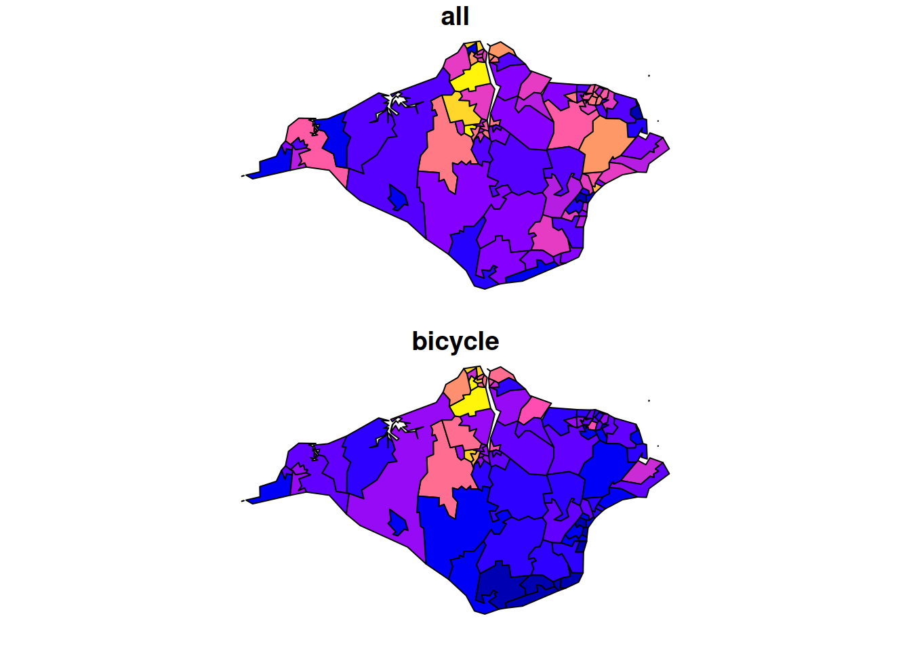
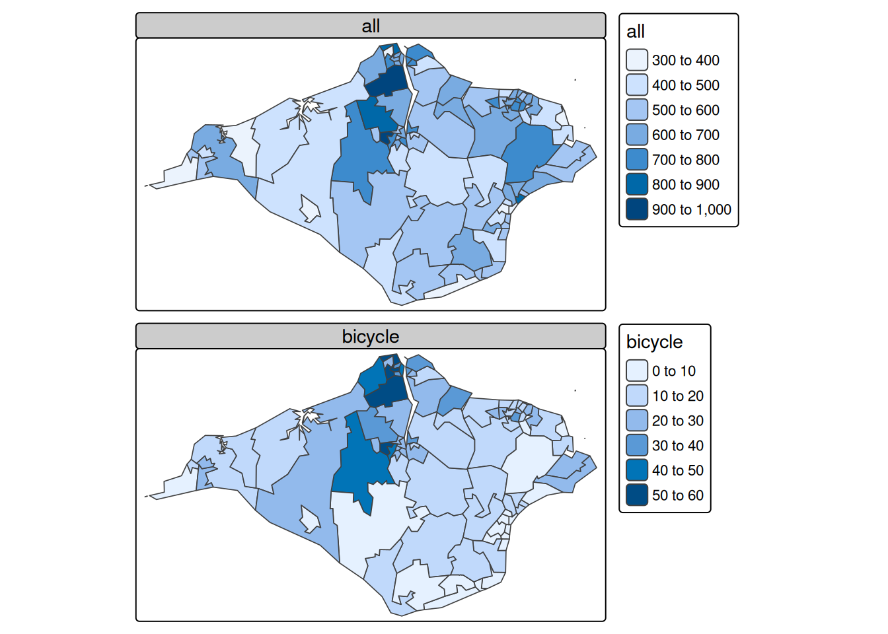
7.10 Analysing point data
Based on the saying, “Don’t run before you can walk,” we’ve learned the vital foundations of R before tackling a real dataset. Temporal and spatial attributes are key to road crash data, hence the emphasis on lubridate and sf. Visualisation is central to understanding data and influencing policy, which is where tmap comes in. With these solid foundations, plus knowledge of how to ask for help (we recommend reading R’s internal help, asking colleagues, searching the internet and creating new questions or comments on online forums such as StackOverflow or GitHub and we suggest you follow this order of resources to get help), you are ready to test the methods on some real data.
Before doing so, take a read of the stats19 vignette, which can be launched as follows:
vignette(package = "stats19") # view all vignettes available on stats19
vignette("stats19") # view the introductory vignetteThis should now be sufficient to tackle the following exercises:
- Download and plot all crashes reported in Great Britain in 2023. (Hint: see the stats19 vignette)
- Find the function in the
stats19package that converts adata.frameobject into ansfdata frame. Use this function to convert the road crashes into ansfobject, calledcrashes_sf, for example. - Filter crashes that happened in the Isle of Wight based on attribute data. (Hint: the relevant column contains the word
local) - Filter crashes happened in the Isle of Wight using geographic subsetting. (Hint: remember
st_crs()?) - Bonus: Which type of subsetting yielded more results and why?
- Bonus: How many crashes happened in each zone?
- Create a new column called
monthin the crash data using the functionlubridate::month()and thedatecolumn. - Create an object called
a_zones_mayrepresenting all the crashes that happened in the Isle of Wight in the month of May. - Bonus: Calculate the average (
mean) speed limit associated with each crash that happened in May across the zones of the Isle of Wight (the result is shown in the map).
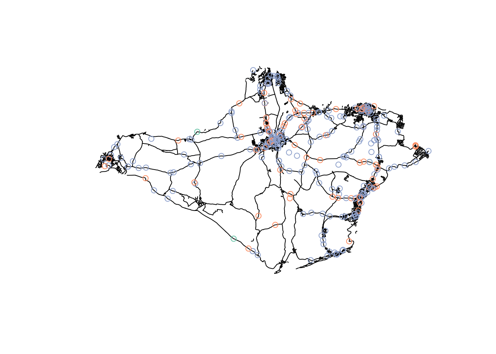
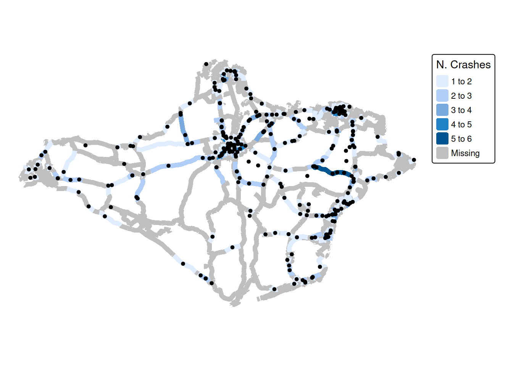
remotes::install_github("itsleeds/osmextract") # install github package for osm data
library(osmextract)
region_name = "essex" # "essex" can be changed to another area name as required
osm_data = oe_get(region_name, extra_tags = c("maxspeed", "ref"))
table(osm_data$highway)
#filter osm_data to show only major roads
roads = osm_data %>%
filter(str_detect(highway, pattern = "moto|prim|seco|tert|trunk"))
# transform geometry and save
roads = st_transform(roads, 27700) #converts to projected BNG system for later use
# plot(roads$geometry) # basic plot of roads
tm_shape(roads) + tm_lines("maxspeed", showNA = T, lwd = 2)
saveRDS(roads, file = "roads.Rds") # Saves road dataset for future use── tmap v3 code detected ───────────────────────────────────────────────────────[v3->v4] `tm_lines()`: migrate the argument(s) related to the legend of the
visual variable `col` namely 'showNA' to 'col.legend = tm_legend(<HERE>)'
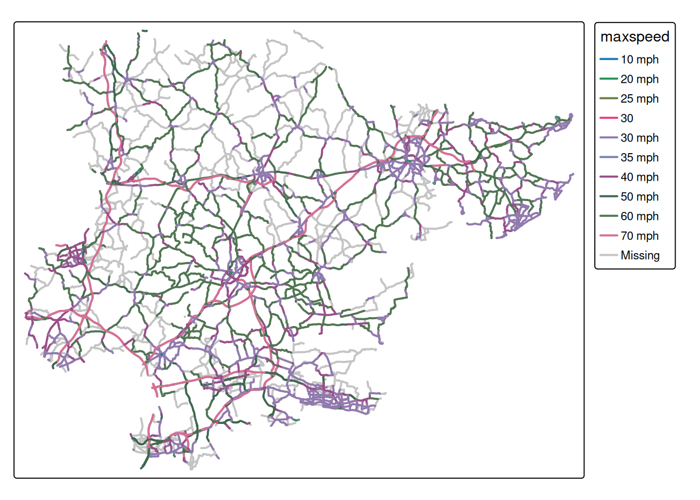
Bonus exercises
Identify a region and zonal units of interest from http://geoportal.statistics.gov.uk/ or from the object police_boundaries in the stats19 package.
- Read them into R as an
sfobject. - Create a map showing the number of crashes in each zone.
- Identify the average speed limit associated with crashes in each zone.
- Identify an interesting question you can ask to the data and use exploratory data analysis to find answers.
- Check another related project for further information on smoothing techniques of counts on a linear network.